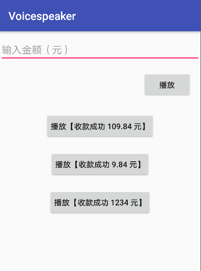

需求
需实现收到推送消息 （比如：支付宝到账 234.23元） 能播放语音文件。
遵循队列结构，先来的先播报，后来的排队等待。
原本使用的 第三方语音合成SDK 的，但在生产环境中发现播放播报会不播放或者播放一半就停止。
所以后面开始使用 本地的语音音频 (.mp3) 拼接播放，不再采用 sdk 方案。 当前使用android标配的 MediaPlayer 。
方案确定
为了实现本地收款语音的播放，笔者想过多种方式实现：
- 使用 单个MediaPlayer 循环，逐个播放音频文件
- 使用 两个（或多个）MediaPlayer，交易播放音频队列
- 使用多个MediaPlayer(对应音频文件数)，逐个播放音频文件
笔者在实现编码中3种方案均有实现过，但发现方案1，2因为来回切换播放源会有严重延迟。
最终确认方案3 是可行且稳妥的方案，以下是详细思路
实现思路
- 初始化VoiceSpeaker时同时构建多个MediaPlayer(对应音频文件数)并设置好音频源
- 调用者放入待播放语音文字（如：收款成功 23.5 元），判断如果正在播放，就将语音文字放入待播放队列
- 取出队列头部的待播放语音文字，将其转化成大写中文金额写法（如：收款成功 二十三点五元）
- 根据中文金额的待播放语音文字映射成对应的音频文件名，封装成List （如：[2,ten,3,dot,5,元]
- 遍历待播放音频文件名List 依次取出MediaPlayer列表播放
- 播放完成，查看待播放队列是否有待播放语音文字，
- 存在则继续执行 3-6，否则 END
思路还是很清晰的，但是编写过程中还是遇到了问题。如下图
1 | 二 |
通过 setOnCompletionListener 监听上一播放音频的结束，结束了 才开始下一音频的播放，但是音频文件的前后部分 是会有一部分是没有声音的，这就导致 读起来像
【收款成功，二 十 三 点 五 元】中间有间隔。
所以 笔者相到一种方法：
在上一音频还未播放结束时(到 85%这样）
就开始播放下一音频（这个值可控）,如下图
1 | 二 |
So，这个实现过程就是这样
code
核心播放器
1 | /** |
暴露的公共方法
1 | /** |
播放
1 | /** |
如何使用
1 | // 添加依赖 |
详细代码请移步 https://github.com/cchao1024/voicePlayer
可以通过运行 sample 查看默认的效果，sample界面如下：
